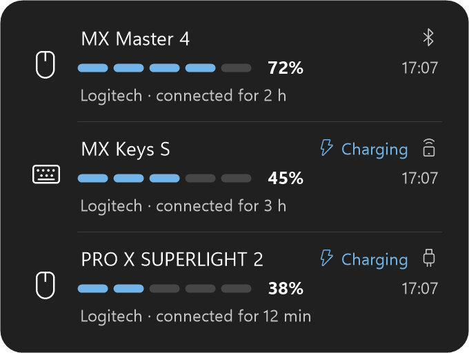
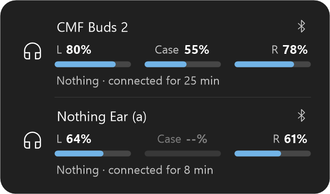
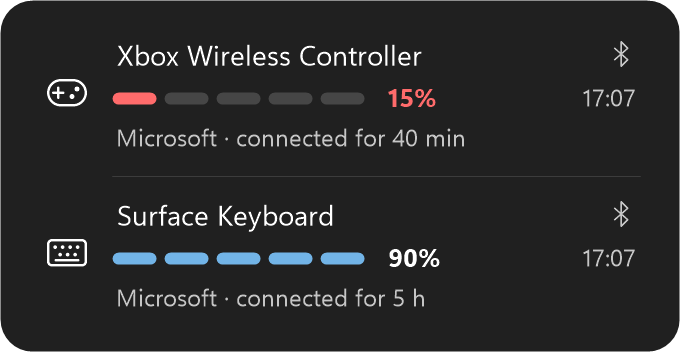

Logitech
Over HID++, on Bluetooth, a Bolt, Unifying or LIGHTSPEED receiver, or a cable.

Version 0.1.0 · Free for Windows 10 and 11
TaskbarBattery shows the charge of your Bluetooth mouse, keyboard and earbuds in the Windows tray, Logitech and Nothing or CMF included.
One 153 KB file. No installer, no account.
Over HID++, on Bluetooth, a Bolt, Unifying or LIGHTSPEED receiver, or a cable.

Left, right and case on one card, which Windows does not show at all.

Controllers, keyboards and headsets whose battery Windows knows, with no setup.

Version 0.1.0 is tested with an MX Master 4, CMF Buds 2 and an Xbox controller. The rest uses the same protocols.
Windows shows it only in Settings, Bluetooth and devices, and not for every device. TaskbarBattery puts it next to the clock and warns you when it runs low.
TaskbarBattery reads it over Logitech’s HID++ protocol, on Bluetooth and on Bolt, Unifying or LIGHTSPEED receivers, with the charging state.
Connect the earbuds to the PC over Bluetooth: TaskbarBattery shows the left bud, the right bud and the case, which Windows does not.
Windows has to know its battery, or it must be a Logitech, Nothing or CMF device. Run the app with --probe and attach the output to an issue on GitHub.
The code is open on GitHub and the app makes no network requests. The file is not signed yet, so SmartScreen asks once: More info, then Run anyway.